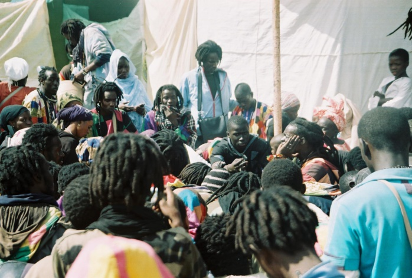

B A Y E F A L L , Un terme plus philosophique qu'autre chose...
C'est l'incarnation finie du soufisme,
de la voie menant vers le Tout-puissant. C'est aussi un mode de vie, une philosophie prônant le travail avant tout.
Ils sont très hors du commun avec un seul objectif très clair: atteindre le summum du paroxysme sur le
chemin menant vers Dieu.
Le Baye Fall (ou Baay Faal) est une branche de la confrérie des Mourides au Sénégal. Fondé par Ibrahima Fall, lui-même adepte du Cheikh Ahmadou Bamba, le mouvement Baye Fall est un culte musulman dérivé du mouridisme.

Voici quelques éléments clés à connaître sur le Baye Fall :

1. Engagement total envers le Cheikh et Dieu : Les Baye Fall vouent un pouvoir total et une croyance absolue en Dieu et au marabout (cheikh), considéré comme le messager de la parole divine.
2. Relation avec le marabout : La relation entre les Baye Fall et leur marabout est illustrée par le principe du Njeballu (allégeance). Ils respectent leur maître spirituel et suivent ses recommandations (Ndiguël).
3. Détachement matériel : Les Baye Fall revendiquent un désintérêt total pour les affaires du monde et vivent détachés de toutes possessions matérielles. Ils sont actifs dans l'agriculture et jouent un rôle essentiel dans le développement économique de la confrérie mouride.
4. Rituels et pratiques : Le Majjal est un rituel où les Baye Fall font la ronde en mendiant par groupes restreints. Ils pratiquent également le dhikr (chant et louanges à Allah, au prophète Mahomet, à Ahmadou Bamba et ses descendants, ainsi qu'à Mame Cheikh Ibrahima Fall et ses descendants).
5. Armes et évolution : À l'origine, les Baye Fall portaient des outils de type sabre, machette ou hache pour les travaux agricoles, qu'ils pouvaient également utiliser comme armes de défense. L'administration coloniale française a interdit le port d'armes blanches, ce qui explique le port du gourdin chez les Baye Fall d'aujourd'hui.
En somme, le Baye Fall incarne un mode de vie spirituel et engagé, basé sur la foi, le travail et le respect envers leur marabout et Dieu.